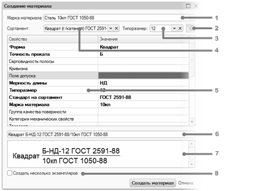

Форма создания экземпляра марки материала. 1 – марка материала, 2 – переключатель фильтра типоразмеров сортамента и доступных типоразмеров, 3 – список выбора значений типоразмера, 4 – список сортаментов доступных для марки, 5 – общий список свойств и значений, используемых в образовании экземпляра материала, 6 – текстовое представление экземпляра материала, 7 – представление материала по стандарту, 8 – флаг создания нескольких экземпляров.
Для создания экземпляра материала необходимо указание марки материала. Без указания марки экземпляр не может быть создан. После указания марки материала для нее формируется список доступных сортаментов, а для совокупности марки и сортамента список доступных типоразмеров. В случае отсутствия доступных типоразмеров список выбора «Типоразмер» будет пустым. Для марок и сортаментов некоторых видов доступных размеров может не быть. В этом случае вы можете снять переключатель фильтра (2) и воспользоваться всем списком типоразмеров для сортамента.
В списке свойств (2) представлены значения свойств марки, сортамента, документа на марку, а также дополнительные свойства присущие экземпляру материала. Часть свойств при формировании экземпляра материала заполняется автоматически. Дополнительные свойства, как правило, заполняются вручную.
После указания свойств нажмите кнопку «Создать материал».